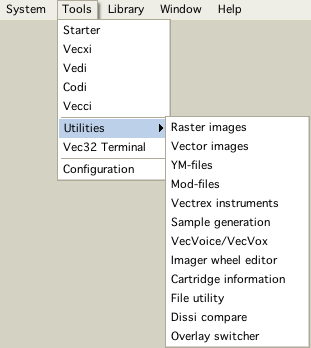

The application "state" VIDE is in, is more or less persistent (if development keeps up).
VIDE remembers its open windows their size and their positions.
There are a few "main" windows and quite a few "child windows". Once any window is open - the gui makes no difference between main and child.
"My" difference between main- and child- windows is the place where they can be opened. Main Windows can be opened from the Menubar, there from the menu: "Tools":

menubar
All other (child) windows are opened from the "main" windows.
Each window is accessable (uniconify/bring to front), via the window menu
Using CTRL/TAB gives access to a "quick" Window switcher
Windows can be iconified to the desktop
Thru tinylaf, themes are supported
Note:
Pressing shift while using the Tools menu to open one of the main windows, opens a second main window of the selected type. (usually if one already exists that window will be brought to front/deiconified)